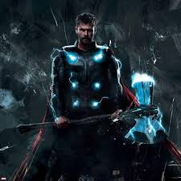

This page is used to talk about myself, an outlet for any and all of my frequent desires for narcissistic expression. If you look to the left, you will see a fairly recent picture of me. In the paragraph to follow, I'll be writing of the many interesting facts attributable to my life.
Once, a rattlesnake bit me. After 5 days of excruciating pain, the rattlesnake died. Batman watches Saturday morning cartoons about me. I once had a wrestling match with Superman, and the loser had to wear his underwear on the outside of pants. My treehouses have fully furnished basements. I once won the world series of poker using Uno cards. When in Rome, they do as I do. I have counted to infinity... twice. I am known to slam revolving doors, and I can win a game of Connect 4 in three moves.
Now you know a little bit about me. The list above is not exhastive- I left out that I am a fountain of knowledge in a desert of ignorance, and many of the other remarkable and astounding things about me. But that is partly for the sake of brevity, and partly because of what is possibly my most important and defining character trait: I am the epitome of humility. Therefore, though I am sure you were enthralled by the opportunity to increase your knowledge about me, I will end this section here. If you are curious about any of the facts above, or just have an unquenchable desire for more facts about me, please see the "Contact" page.